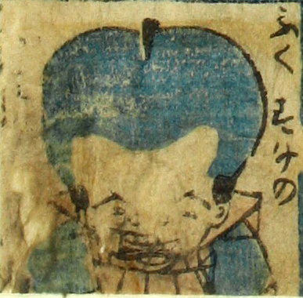

福助；フクスケ，男；オトコ

福助のお化け。頭が異常に大きく、裃を着て座っている。髪を青々と剃って髷を結い、歯をむき出している。絵の右側に「ふくすけの」とあり、左側の数文字はかすれて判読できない。
著作者：芳盛／出典：親書誌：U426_nichibunken_0073：しん板化物尽し；シンパンバケモノヅクシ／日付：2006／資源識別子：U426_nichibunken_0073_0048_0000
Copyright (c)2010- International Research Center for Japanese Studies, Kyoto, Japan. All rights reserved.